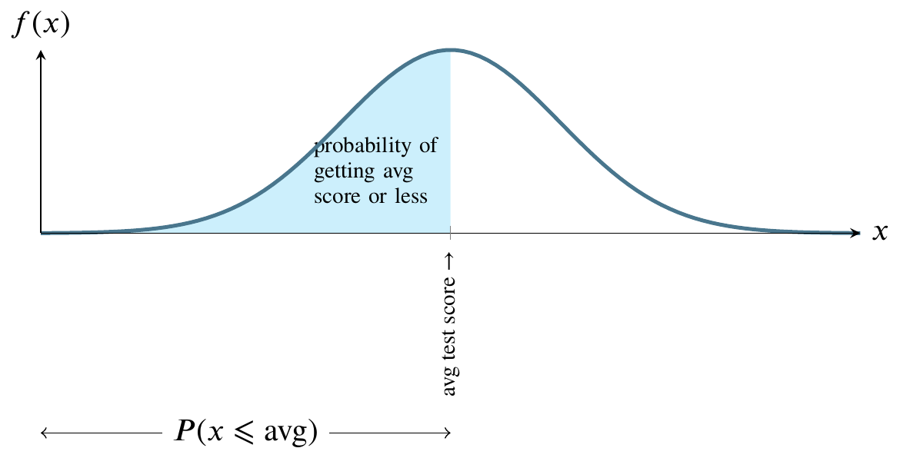
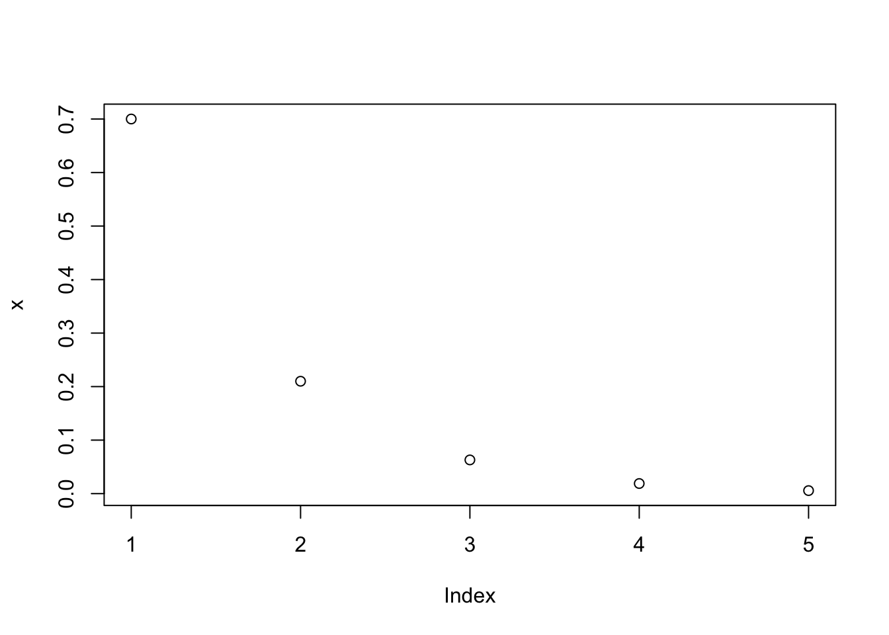

5 Distributions of Random Variables
5.1 Recap Week 04
We did week 04 in one day, covering numerous probability basics and doing a few exercises in probability, mostly paper and pencil exercises. We saw three examples of continuous probability distributions: normal, uniform, and F. This week, we’ll examine continuous distributions in some more detail.
5.2 Five distributions
We previously looked at the normal distribution. In this Chapter of the textbook, we visit five distributions:
- Normal distribution
- Geometric distribution
- Binomial distribution
- Negative binomial distribution
- Poisson distribution
To save time, we will follow the textbook instead of lecture notes.
The following picture illustrates the normal distribution. The mound-shaped curve represents the probability density function and the area between the curve and the horizontal line represents the value of the cumulative distribution function.
Consider a normally distributed nationwide test.
The total shaded area between the curve and the straight horizontal line can be thought of as one hundred percent of that area. In the world of probability, we measure that area as 1. The curve is symmetrical, so measure all the area to the left of the highest point on the curve as 0.5. That is half, or fifty percent, of the total area between the curve and the horizontal line at the bottom. Instead of saying area between the curve and the horizontal line at the bottom, people usually say the area under the curve.
For any value along the \(x\)-axis, the \(y\)-value on the curve represents the value of the probability density function.
The area bounded by the vertical line between the \(x\)-axis and the corresponding \(y\)-value on the curve, though, is what we are usually interested in because that area represents probability.
5.3 Notation
\(N(\mu,\sigma)\) is said to characterize a normal distribution. If we know the parameters \(\mu\), the mean, and \(\sigma\), the standard deviation, we have a complete picture of the normal distribution, namely the height of the hump and its width.
5.4 R function to find probability
The pnorm() function takes a value of a normally distributed random variable and returns the probability of that value or less. The textbook gives an example of the SAT and ACT scores. For the SAT, the textbook claims that \(\mu = 1100\) and \(\sigma=200\) so we can say the SAT score \(x\sim N(1100,200)\) which is read as “x has the normal distribution with mean 1100 and standard deviation 200.” Suppose you score 1100. What is the probability that someone will score lower than you?
pnorm(1100,mean=1100,sd=200)[1] 0.5This returns a value of 0.5 or fifty percent. That’s something we can tell without a computer, but for the normal distribution, other values are difficult to compute by hand or guess correctly. For instance,
pnorm(1400,mean=1100,sd=200)[1] 0.9331928returns a value of 0.9331928, or that 93 percent of students get below this score.
Because all probabilities sum to 1, we can use this information to tell the probability of someone getting a higher score, or the probability of getting a score between two scores by subtracting the smaller from the larger.
The textbook gives another example as finding the probability that a particular student scores at least 1190:
1 - pnorm(1190,mean=1100,sd=200)[1] 0.3263552which returns 32.64 percent. Note that we did not explicitly calculate the \(Z\)-score that leads to this probability. The \(Z\)-score is a way of standardizing so that instead of (in this case) \(x\sim N(1100,200)\), we calculate the probability of \(Z\sim N(0,1)\). Here, we standardize by recognizing that \(Z=(x-\mu)/\sigma\) or \((1190-1100)/200=0.45\) and then we can say
1 - pnorm(0.45,mean=0,sd=1)[1] 0.3263552and we get the same answer as above, 32.64 percent.
5.5 Geometric distribution
First we need Bernoulli random variables to understand the Geometric distribution.
If \(X\) is a random variable that takes value 1 with probability of success \(p\) and \(0\) with probability \(1 − p\), then \(X\) is a Bernoulli random variable with mean and standard deviation \(\mu=p\) and \(\sigma=\sqrt{p(1-p)}\). A Bernoulli random variable is a process with only two outcomes: success or failure. Flipping a coin and calling it is an example of Bernoulli random variable.
Now the question is “What happens if you flip a coin or roll the dice or some other win/lose process many times in a row?”
The geometric distribution describes how many times it takes to obtain success in a series of Bernoulli trials.
The textbook (p. 145) gives an example where an insurance company employee is looking for the first person to meet a criteria where the probability of meeting that criteria is 0.7 or seventy percent. We can calculate the probability of 0 failures (the first person, one failure (the second person), and so on, using R:
a <- dgeom(x=0,prob=0.7) # the first person
b <- dgeom(x=1,prob=0.7) # the second person
c <- dgeom(x=2,prob=0.7) # the third person
d <- dgeom(x=3,prob=0.7) # the fourth person
e <- dgeom(x=4,prob=0.7) # the fifth personand if we graph these numbers, we’ll find they have the property of exponential decay.
x<-c(a,b,c,d,e)
plot(x)
The textbook gives the following definition of the geometric distribution.
If the probability of a success in one trial is \(p\) and the probability of a failure is \(1 − p\), then the probability of finding the first success in the \(n\)th trial is given by \((1 − p)^{n−1}p\). The mean (i.e. expected value) and standard deviation of this wait time are given by \(μ = 1/p\), \(σ = \sqrt{(1 − p)/p^2}\).
5.6 Binomial distribution
The textbook says that the binomial distribution is used to describe the number of successes in a fixed number of trials. This is different from the geometric distribution, which described the number of trials we must wait before we observe a success.
Suppose the probability of a single trial being a success is \(p\). Then the probability of observing exactly \(k\) successes in \(n\) independent trials is given by
\[ \binom{n}{k}p^k(1-p)^{n-k} \]
and \(\mu=np\), \(\sigma=\sqrt{np(1-p)}\)
5.6.1 Example using R
The website r-tutor.com gives the following problem as an example:
5.6.1.1 Problem
Suppose there are twelve multiple choice questions in an English class quiz. Each question has five possible answers, and only one of them is correct. Find the probability of having four or fewer correct answers if a student attempts to answer every question at random.
5.6.1.2 Solution
Since only one out of five possible answers is correct, the probability of answering a question correctly by random is 1/5=0.2. We can find the probability of having exactly 4 correct answers by random attempts as follows.
dbinom(4, size=12, prob=0.2)[1] 0.1328756which returns 0.1329.
To find the probability of having four or less correct answers by random attempts, we apply the function dbinom with \(x = 0,\ldots,4\).
dbinom(0, size=12, prob=0.2) +
dbinom(1, size=12, prob=0.2) +
dbinom(2, size=12, prob=0.2) +
dbinom(3, size=12, prob=0.2) +
dbinom(4, size=12, prob=0.2)[1] 0.9274445which returns 0.9274.
Alternatively, we can use the cumulative probability function for binomial distribution pbinom.
pbinom(4, size=12, prob=0.2)[1] 0.9274445which returns the same answer.
5.6.1.3 Answer
The probability of four or fewer questions answered correctly by random in a twelve question multiple choice quiz is 92.7%.
5.7 Negative binomial distribution
This is a generalization of the geometric distribution, defined in the textbook as follows.
The negative binomial distribution describes the probability of observing the \(k\)th success on the \(n\)th trial, where all trials are independent:
\[ P (\text{the kth success on the nth trial}) = \binom{n − 1}{k − 1} p^k(1 − p)^{n−k} \]
The value \(p\) represents the probability that an individual trial is a success.
5.8 Poisson distribution
The textbook defines the Poisson distribution as follows.
Suppose we are watching for events and the number of observed events follows a Poisson distribution with rate \(λ\). Then
\[ P (\text{observe k events}) = \frac{λ^ke^{−λ}}{k!} \]
where \(k\) may take a value 0, 1, 2, and so on, and \(k!\) represents \(k\)-factorial, as described on page 150. The letter e ≈ 2.718 is the base of the natural logarithm. The mean and standard deviation of this distribution are λ and √λ, respectively.
The r-tutor website mentioned above offers the following example of a Poisson distribution problem solved using R.
5.8.0.1 Problem
If there are twelve cars crossing a bridge per minute on average, find the probability of having seventeen or more cars crossing the bridge in a particular minute.
5.8.0.2 Solution
The probability of having sixteen or fewer cars crossing the bridge in a particular minute is given by the function ppois.
ppois(16, lambda=12) # lower tail[1] 0.898709which returns 0.89871
Hence the probability of having seventeen or more cars crossing the bridge in a minute is in the upper tail of the probability density function.
ppois(16, lambda=12, lower=FALSE) # upper tail[1] 0.101291which returns 0.10129
5.8.0.3 Answer
If there are twelve cars crossing a bridge per minute on average, the probability of having seventeen or more cars crossing the bridge in a particular minute is 10.1%.